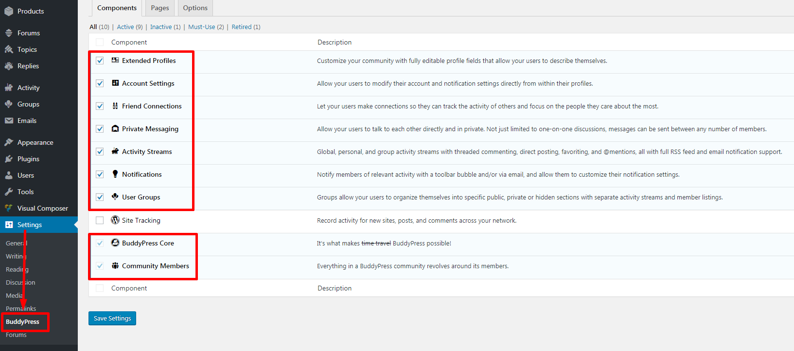

Listopia Theme
A Beautiful, Professional and Ultimate Wordpress Theme .
A Beautiful, Professional and Ultimate Wordpress Theme .

This video is another theme which use the same framework (javo framework) and same way to setup. the names can be different but the same way to setup / install.

You can get more information about us from our online documentation.Link
If you have any questions, please create a ticket on our support site.